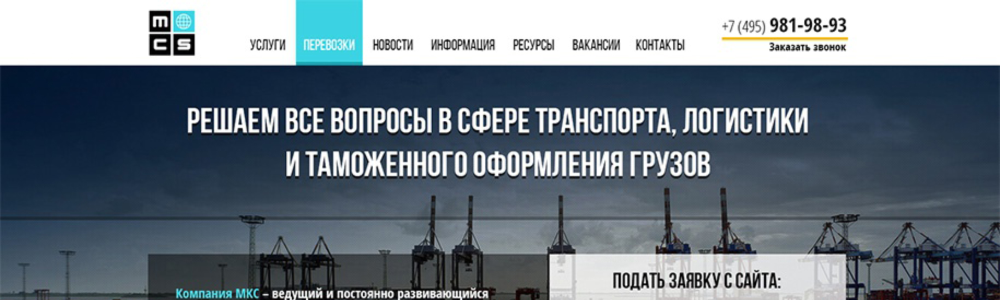
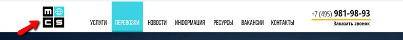
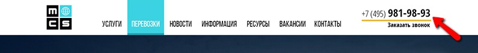
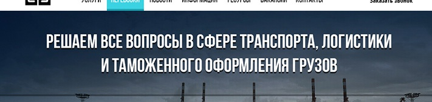
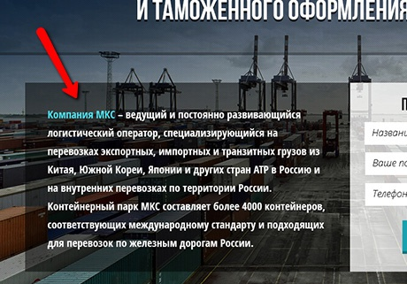
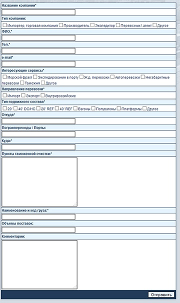

Разработка любого продающего сайта и не только продающего, начинается с проектирования шапки. Очень часто у дизайнеров возникает вопрос – с чего начать рисовать шапку сайта, как сделать ее эффективной и привлекательной.
Сегодня мы рассмотрим 7 простых и проверенных на практике правил, которые позволяют создать хорошую, «цепляющую» шапку для лендинга или продающего сайта на примере.
Пример шапки:
 Что нужно учитывать, создавая дизайн шапки сайта.1. Логотип
В шапке слева должен находиться логотип компании или бренда. Казалось бы, ни чего сложного в этом правиле нет, но на практике дизайнеры часто начинают фантазировать и размещают логотип в том месте, где пользователь его может не заметить.
Логотип в шапке – это важнейший элемент брендирования, который пользователь должен заметить в первую очередь. Взгляд пользователя, попавшего на новый, не знакомый сайт начинает свое путешествие по сайту именно с левого верхнего угла. И если он там не обнаружит логотипа, автоматически страничка будет восприниматься у пользователя нестандартной и хитрой, пользователь начнет напрягать свое внимание и мозг. А этого нужно по максимуму избегать, так как вероятность того, что посетитель уйдет с такого сайта, ничего не купив на долю процентов увеличивается.
Раньше дизайнеры могли экспериментировать, размещали логотип даже справа. Но время идет и практика показала, что размещение логотипа в шапке сайта именно слева сверху является наиболее правильным решением.
2. Контактный телефон.
Традиции в веб-дизайне, как и в любой другой области, складываются годами и имеют под собой весьма объективные основания. Расположение основного контактного телефона также вытекает из сложившихся традиций. Находится телефон справа сверху.
Если пользователь немедленно хочет приобрести товар или заказать услугу, то он непременно позвонит. И поиск телефона не должен занимать много времени и усилий у покупателя. Расположение телефона справа сверху – лучшее решение при создании шапки. Кроме того, под телефоном или над ним, обязательно нужно разместить ссылку заказа обратного звонка.
Смысл обратного звонка в том, чтобы помочь потенциальному покупателю принять решение, внушить доверие и дело тут даже не в сэкономленных на звонке деньгах. Человек, который заказывает обратный звонок – проверяет, как работает компания, как оперативно сотрудники отвечают, как общаются. Это очень важный момент.
3. Навигационное меню.
Меню с основной навигацией по сайту обязательно должно присутствовать в шапке. В принципе, нет разницы, размещено это меню сверху в шапке или снизу. Самое главное, чтобы оно присутствовало в шапке и не было вертикальным.
Вертикальное меню более подходит для каталогов, интернет-магазинов и прочих подобных сайтов, где демонстрируются категории товаров. Но в шапке оно должно быть горизонтальным.
4. Точный и лаконичный заголовок.
Под верхней лентой шапки идет описание основных преимуществ и начинается это описание с простого, понятного и лаконичного заголовка. Не стоит делать заголовок слишком длинным, поставьте себя на место пользователя, что он хотел бы увидеть, что хотел бы получить?
Такие несложные размышления позволят вам придумать красивый и понятный заголовок.
5. Тематическая иллюстрация.
Вы наверняка заметили в шапке из примера – большую тематическую картинку. Такая картинка может идти фоном, как в примере, либо просто располагаться рядом с текстом в шапке. Кроме того, такую картинку можно заменить или дополнить каким-либо тематическим видеоматериалом.
Как показывает практика – размещение шапки или видео в фоне шапки заметно увеличивает конверсию, создает у посетителя нужную картинку товара и вызывает желание приобрести предлагаемый товар, либо воспользоваться услугами.
Изображение в шапке должно отображать деятельность компании прямо, а не косвенно. Например, было бы неплохо у обучающей организации разместить картинку не каких-либо персонажей или иллюстраций, косвенно относящихся к деятельности компании, а запечатлеть на фото сам процесс оказания услуги.
В примере с обучающей компанией – это непосредственно класс с учениками за партами. Если это доставка пиццы – должна быть картинка курьера с красивой и вкусной пиццей. Ну, вы поняли. Человек должен видеть товар или процесс лицом. И он должен захотеть это.
6. «Текст доверия».
В шапке обязательно должен быть так называемый «текст доверия». В данном коротком изложении нужно отобразить то, что заставит пользователя захотеть предмет продажи еще больше. Прежде, чем писать в этот блок, лучше поставить себя на место нуждающегося пользователя, понять, что он хочет.
Если вы научитесь правильно угадывать желания пользователей – вы будете успешным веб-дизайнером. Вместо текста, также, можно написать список преимуществ компании по порядку – от самого важного и цепляющего.
7. Простая форма обратной связи.
Очень часто пользователь на подсознательном уровне после просмотра первого экрана сайта или его шапки уже принимает решение о покупке, а страничку листает ниже просто так. По инерции. Важно в шапке разместить простую форму заказа. В данной форме должно быть 2-3 поля.
Вообще, уже давно не секрет для профессионалов веб-дизайна, что сложные формы – не заполняет никто. А если и заполняет, то только в том случае, если это действие имеет жизненную необходимость. Например, регистрация финансовых аккаунтов. Но в продающий сайтах ни в коем случае нельзя размещать большие формы, такие, как эта:
Максимум 3 поля – Имя, телефон и E-mail. Или еще какое-нибудь, которое требует специфика компании, для которой разрабатывается дизайн.
Хотелось бы обратить ваше внимание на то, что приведенные выше элементы в шапке, кроме логотипа и формы обратной связи, если она есть, могут располагаться в любом порядке, но наличие их – жизненно необходимо для хорошего продающего сайта. Зачем экспериментировать, если многочисленные исследования продаж и поведения пользователей привели именно к такому набору элементов и их ориентировочному расположению.